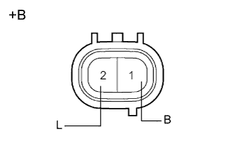
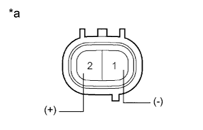
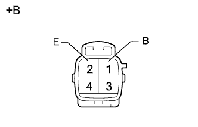

КОМПРЕССОР РЕГУЛИРОВКИ ВЫСОТЫ ПОДВЕСКИ > ПРОВЕРКА |
| 1. ПРОВЕРЬТЕ КОМПРЕССОР РЕГУЛИРОВКИ ВЫСОТЫ (ВЫПУСКНОЙ КЛАПАН) |
|  |
Измерьте сопротивление выпускного клапана.
Измерьте сопротивление в соответствии со значениями, приведенными в таблице ниже.
| Контакты для подключения диагностического прибора | Условие | Заданные условия |
| 2 (L) - 1 (B) | 15 - 25°C (59 - 77°F) | 10 - 14 Ом |
| *a | Устройство с неподсоединенным жгутом проводов (выпускной клапан) |
|  |
Проверьте работу выпускного клапана.
Подсоедините положительный (+) вывод аккумуляторной батареи к контакту 2 (B), а отрицательный (-) вывод – к контакту 1 (L).
Проверьте наличие звука срабатывания клапана регулировки высоты.
| *a | Устройство с неподсоединенным жгутом проводов (выпускной клапан) |
| 2. ПРОВЕРЬТЕ КОМПРЕССОР РЕГУЛИРОВКИ ВЫСОТЫ (ЭЛЕКТРОДВИГАТЕЛЬ КОМПРЕССОРА) |
Проверьте работу компрессора.
|  |
Подайте напряжение аккумуляторной батареи 12 В на электродвигатель компрессора и проверьте его работу.
| Условия измерений | Заданное значение |
| Положительный (+) вывод аккумуляторной батареи 12 В → контакт 1 (В) Отрицательный (-) вывод аккумуляторной батареи 12 В → контакт 2 (E) | Электродвигатель работает. |
| *a | Устройство с неподсоединенным жгутом проводов (электродвигатель компрессора) |